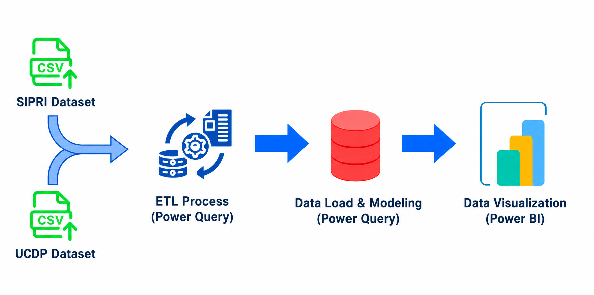
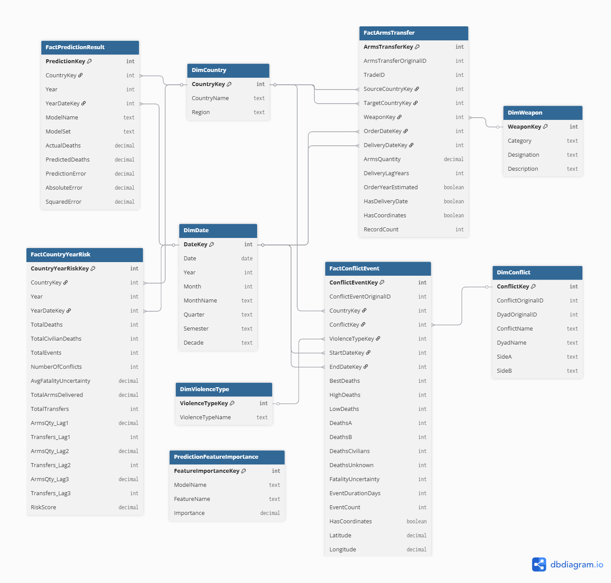
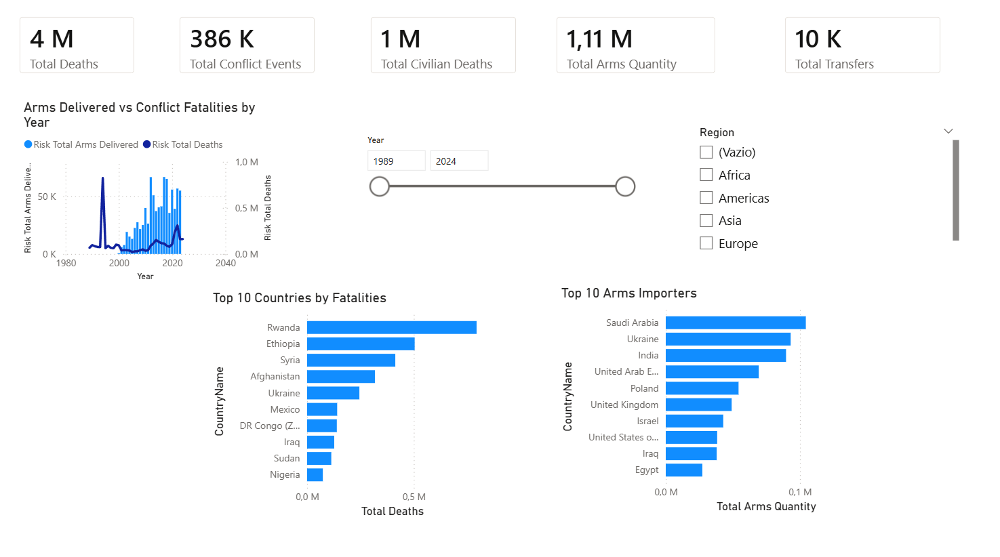
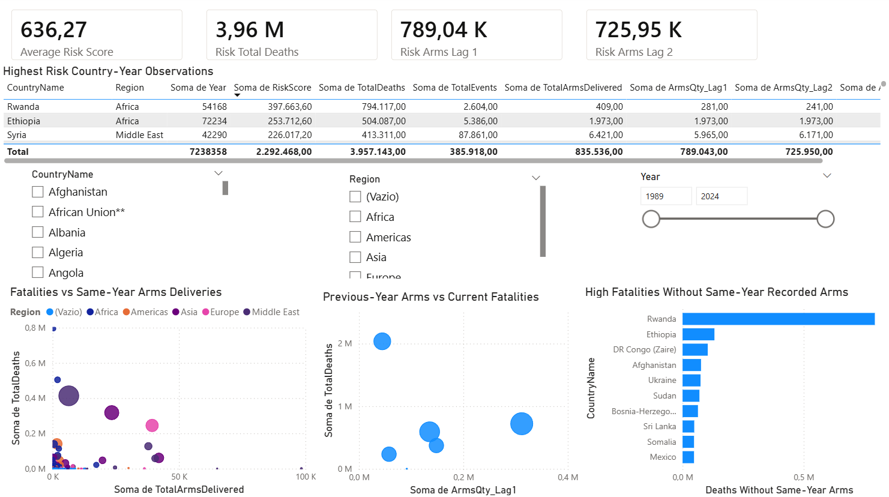
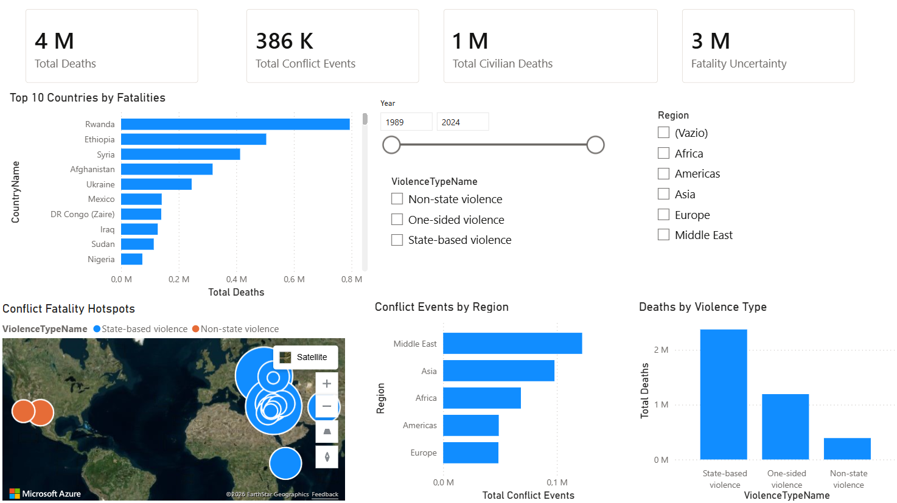
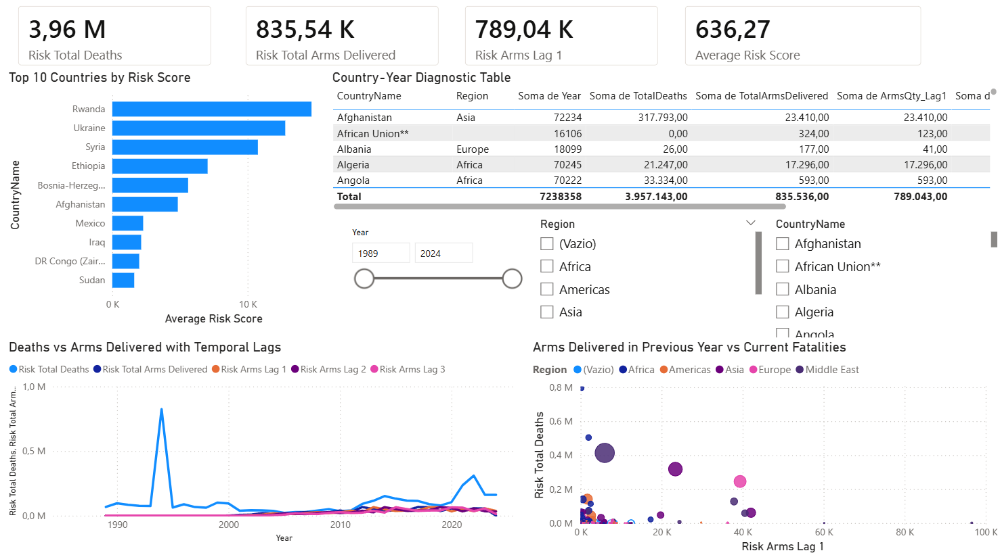
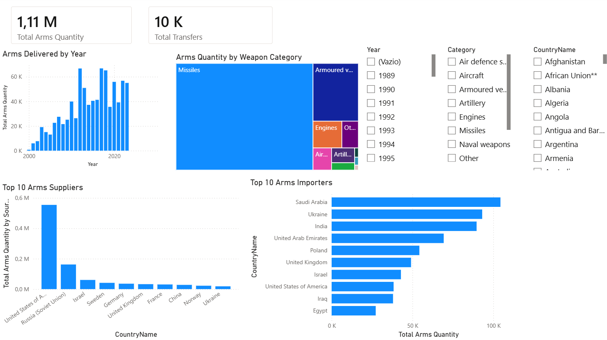
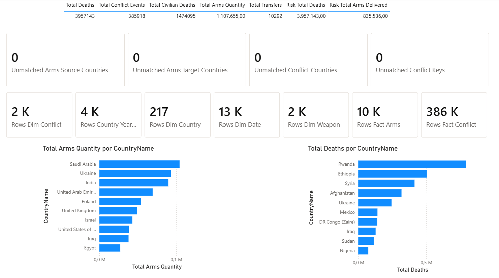
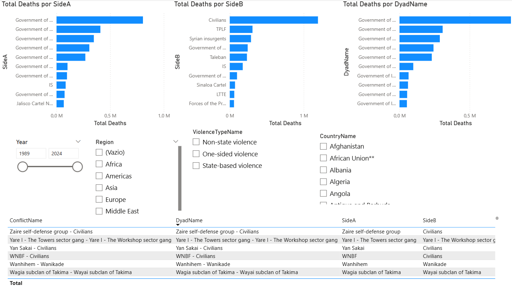
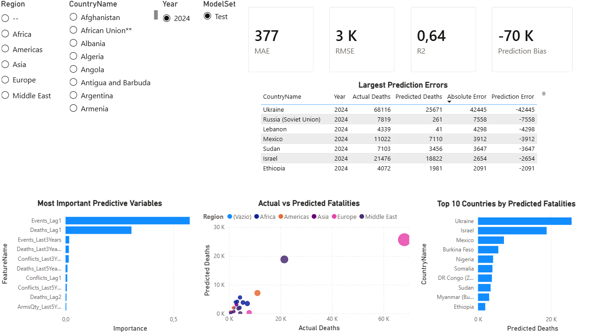

Which countries receive the largest volumes of arms and which countries register the highest fatality levels?
Data Analysis Technologies - 2026
Business Intelligence in Global Geopolitics
Spatiotemporal Analysis of Conflicts and Arms Flows
Gabriel Pinto
João Fonseca
José Cunha
385,918 conflict events
10,520 arms transfer records
8 Power BI pages
2024 predictive test year
01 - Analytical framing
Analytical questions
Arms flows
+
Conflict outcomes
How do arms deliveries and fatalities evolve over time?
Are arms delivered in previous years associated with higher conflict intensity in later years?
Which country-year observations show high-risk or anomalous patterns?
The objective is not causal attribution. The objective is a defensible BI structure for descriptive analysis, temporal diagnosis and exploratory prioritization.
02 - Data landscape
Two datasets, two grains, one analytical problem
Transfer-level dataset
Global Arms Transfer
Based on the SIPRI Arms Transfers Database
10,520 rows
15 columns
2000-2023
Each record describes an international transfer: source, target, order date, delivery date, quantity, weapon category, designation, description and coordinates. Updates are expected through new SIPRI releases, normally on a yearly cycle.
Transfer-level
≠
Event-level
Event-level dataset
UCDP GED v25.1
Uppsala Conflict Data Program, Uppsala University
385,918 rows
49 columns
1989-2024
Each record is a georeferenced conflict event with country, region, dates, coordinates, actors, violence type and fatality estimates. The dataset is versioned and updated through recurrent UCDP releases, normally annually.
The different grains make direct event-transfer joins analytically unsafe; both domains must be compared at a compatible aggregation level.
03 - Power Query architecture
Refresh pipeline inside the PBIX

04 - ETL process in Power Query
Transformations that made the model defensible
CountryAliases reduced failed matches between SIPRI-style names, UCDP country names and non-standard entities.
FactCountryYearRisk aggregates conflicts and arms deliveries to CountryKey-Year, avoiding many-to-many overcounting.
Main implementation challenges
granularity mismatch
country aliases
temporal mismatch
lag variables
arms quantity interpretation
05 - Star schema and analytical coverage
Fact constellation for heterogeneous geopolitical data

DimCountry and DimDate provide shared geography and time. DimWeapon, DimViolenceType and DimConflict preserve domain-specific context.FactArmsTransfer keeps one row per transfer; FactConflictEvent keeps one row per event; FactCountryYearRisk provides the safe integrated grain.FactArmsTransfer and conflict hotspots from FactConflictEvent. Combined lag and anomaly questions use FactCountryYearRisk, preventing event-transfer over-counting.FactPredictionResult and PredictionFeatureImportance are generated from a Python query executed during Power Query refresh. New datasets can be processed within Power BI, although a configured Python environment is still required.06 - Diagnostic analysis and exploratory data mining
Lag variables make the comparison temporally defensible
FactCountryYearRisk aggregates both domains to one country in one year. Arms delivered in previous years are then compared with current conflict intensity through engineered lag variables.
country-year grainarms lagsrisk scoreanomaly shortlist
Random Forest tests historical predictive signal
This is a separate model. It estimates fatalities from historical country-year indicators and stores outputs in FactPredictionResult and PredictionFeatureImportance.
historical featuresRandom Forestpredicted deathserror analysis
Engineered variables for diagnostic analysis and exploratory data mining
TotalDeaths
TotalEvents
TotalArmsDelivered
ArmsQty_Lag1
ArmsQty_Lag2
ArmsQty_Lag3
AvgFatalityUncertainty
RiskScore
Heuristic risk score
RiskScore = 0.5 * TotalDeaths + 0.3 * ArmsQty_Lag1 + 0.2 * TotalEvents
07 - Power BI intelligence surface
The report as an investigation workflow

Overview global orientation
Risk / Anomalies country-year triage
Conflict Hotspots spatial intensity
Temporal Diagnosis lags and timelines
Arms Flows suppliers, importers, categories
Validation row counts and unmatched keys
Conflict Actors dyads, SideA, SideB
Predictive Model forecast benchmark08 - Diagnostic layer
From global monitoring to anomalous country-years
Same-year comparison is insufficient
Arms may be ordered before delivery, stored for years, captured, produced domestically or absent from official transfer records.
Lag variables are the methodological control
ArmsQty_Lag1, Lag2 and Lag3 compare previous deliveries with current conflict intensity.
Risk is only a triage alert
The score highlights country-years where fatalities, events and prior arms deliveries co-occur. This may suggest correlation for investigation, but it does not prove a real causal relationship.
The diagnostic layer reduces search time and guides the analyst from aggregate patterns to cases requiring external geopolitical evidence.
09 - Predictive data mining with Random Forest
Prediction as an exploratory benchmark
MAE377
RMSE3 K
R20.64
Bias-70 K
Input grain: country-year
Training period: 2000-2023
Test year: 2024
Target: log1p(TotalDeaths)
Top signals: Events_Lag1, Deaths_Lag1, Events_Last3Years
FactPredictionResult stores actual deaths, predicted deaths and errors. PredictionFeatureImportance explains the model. Large errors are also analytical signals for contextual investigation.
10 - Product vision
An extensible geopolitical BI architecture
Potential users
Analysts, researchers, decision makers, journalists, international organizations and geopolitical monitoring teams.
Refresh model
replace CSVs
refresh Power BI
ETL reapplied
dashboards rebuilt
Expected cadence: mostly yearly, aligned with new SIPRI and UCDP releases.
sanctions
GDP
military expenditure
alliances
refugee flows
socioeconomic indicators
model comparison
Power BI Service / Fabric
11 - Closing argument
The contribution is the analytical architecture
Heterogeneous dataInternational arms transfers and georeferenced conflict events are integrated without collapsing their original grains.
Dimensional modelShared dimensions, explicit fact grains and reusable measures make the model auditable and interpretable.
ValidationUnmatched-key checks and row-count controls support technical credibility.
Risk and predictionDiagnostic triage and predictive benchmarking extend the report beyond descriptive dashboards.
The project should be read as a structured monitoring architecture: it accelerates investigation, but final interpretation remains evidence-based and context-dependent.
12 - Limitations and future work
Methodological caution and next extensions
Current limitations
- Temporal coverage differs: conflicts cover 1989-2024, while arms transfers cover 2000-2023.
- Official arms transfers exclude illicit flows, small arms, captured weapons, domestic production and indirect routes.
- Fatality estimates contain uncertainty and depend on source quality.
- Arms quantity is not equivalent across weapon categories.
- Lag analysis, risk scoring and predictive modelling remain diagnostic and exploratory, not causal.
Future work
- Normalize the risk score so deaths, arms quantities and events contribute on comparable scales.
- Add socioeconomic, political and security indicators such as GDP, sanctions, alliances, refugee flows and military expenditure.
- Extend predictive validation with temporal backtesting, model comparison and alternative algorithms.
Final message: the dashboards are the visible layer; the reusable BI architecture is the main scientific and technical contribution.
Questions